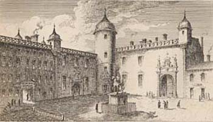
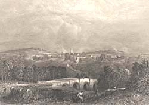
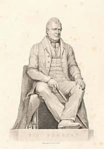

|
|
||||||||
|
|
Home | Corson Collection | Biography | Works | Image Collection | Recent Publications | Portraits | Correspondence | Forthcoming Events | Links | E-Texts | Contact Professional LifeOn March 31, 1786, after two years at Edinburgh University, Scott entered his father's office to begin his apprenticeship to the profession of Writer to the Signet. It had not yet been decided whether he would eventually follow his father's career or instead aim for the Bar. His father, though, felt that a Writer's technical training would be useful even if Scott should choose the latter path. Though Scott disliked the tedious clerical tasks that he was set, his ambition and filial devotion made him a diligent and quick-witted apprentice. Through his father's many Highland clients, he made his first acquaintance with the culture and traditions that were to figure so prominently in works such as The Lady of the Lake, Waverley, and Rob Roy. A case involving one client, the Jacobite veteran, Alexander Stewart of Invernahyle, who claimed to have fought a duel with Rob Roy, permitted Scott to visit the Highland region for the first time. The desolate and picturesque scenes through which he traveled were to make a lasting impression on his poetic imagination.
Scott's experiences as a fledgling Advocate are echoed in those of Alan Fairford in his 1824 novel Redgauntlet which provides a vivid picture of Parliament House (home to the Faculty of Advocates and the Court of Session) in the late eighteenth century. The appearance of Parliament House changed dramatically in Scott's lifetime. The original seventeenth-century building was refaced in a neoclassical style at the beginning of the nineteenth century, and further modifications were carried out after the great fire in 1824. Something of its appearance at the time of Scott's calling is captured in a sketch (below) by Scott's friend and fellow Advocate, James Skene of Rubislaw. (For more on the Faculty of Advocates and Parliament House, see Links at the foot of this page.)  During the early years of his practice Scott worked exclusively on provincial circuits. His first Edinburgh case was not heard until July 1795. His earnings grew modestly during this period, but worryingly for Scott, more than half his work came from his father's connections. Following his marriage in 1797, there was a growing need for a more stable source of income. This became all the more pressing after the birth of his first child, Sophia, in 1799. While collecting ballads for what would eventually become Minstrelsy of the Scottish Border, he had received some help from an amateur antiquarian, Andrew Plummer, Sheriff-Depute of Selkirkshire. Plummer's health was rapidly failing, and with his support and that of Duke of Buccleuch, Scott went to London to petition Henry Dundas, controller of Crown patronage in Scotland, to be named as Plummer's successor. He was appointed on December 16, 1799, and remained in the post until his death. To mark the centenary of Scott's death in 1932, a memorial was erected outside the Town Hall in Selkirk (for an image, see Links at the foot of this page). Scott's courtroom in the same building has been preserved as a museum and is open to the public. As Sheriff-Depute, Scott's role was essentially that of a county judge. The post presented several advantages. It brought an annual income of £300, required only a seasonal presence in Selkirkshire, permitted him to reside in Edinburgh for most of the year, and did not prevent him from continuing to practise as an Advocate. From now on, he would spend the winter and summer in Edinburgh and from mid-July to mid-November perform his duties at Selkirk. The appointment also provided ample opportunity for ballad-collecting in nearby Ettrickdale. Nonetheless, as Scott's family grew, he again began to worry about his financial security. In 1805, he was awaiting the birth of his fourth child Charles. The Minstrelsy of the Scottish Border and the recently published The Lay of the Last Minstrel had brought him his first taste of success as a writer. Literary earnings, though, were notoriously precarious, and Scott was becoming increasingly pessimistic about his career prospects as an Advocate. He believed that his literary ambitions were alienating clients and professional colleagues and saw only a distant possibility of being appointed to the judiciary. He decided, therefore, to seek a salaried post. One of the Principal Clerks of the Court of Session, George Home of Wedderburn, was having increasing difficulty in performing his work due to encroaching deafness. His post held out many attractions for Scott. It brought £800 a year, it would not force him to resign his Selkirk sheriffdom, and would consume only between four and six hours a day during the six months that the Court was in session. Scott offered to assume Home's labours and to allow him the entire salary for his lifetime. His appointment was secured on March 8, 1806.
For the rest of his life, Scott combined extensive writing and editing commitments with his daily work as Clerk of Session and Sheriff-Depute of Selkirkshire. In recognition of his long and distinguished legal career, a statue of a seated Scott by John Greenshields (1792-1835) is now located in Parliament Hall, Parliament House, where Scott worked both as an Advocate and as a Clerk of Session. See below for an engraving of the statue (commonly known as 'Sic Sedebat') by George Baird Shaw.  Links
Last updated: 28-Nov-2011
|
|||||||